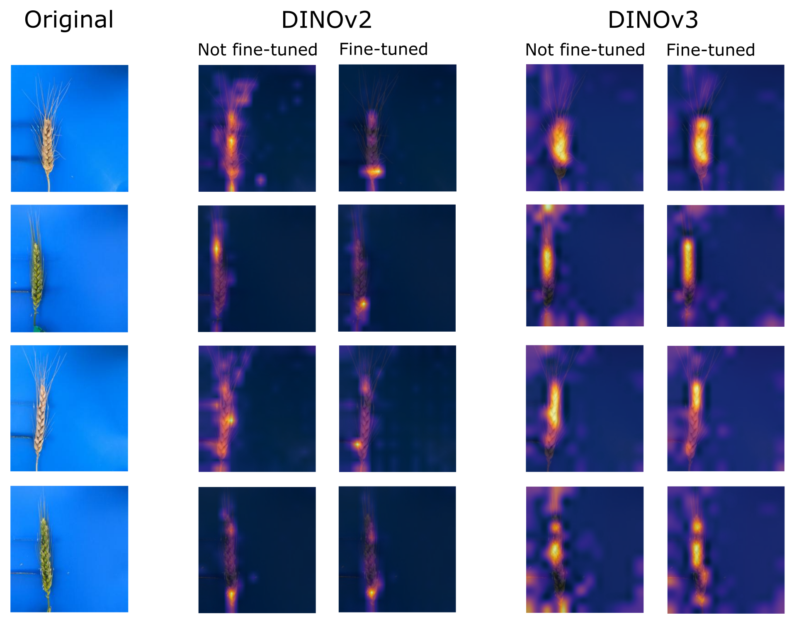
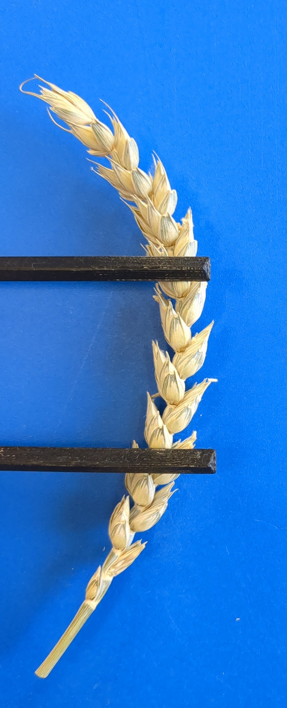
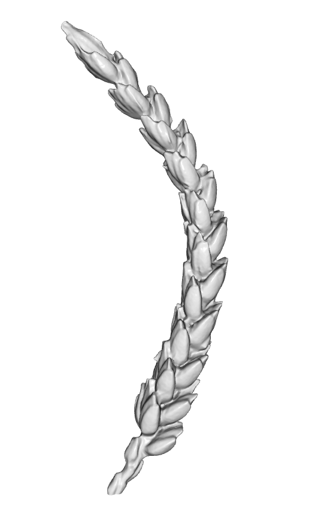
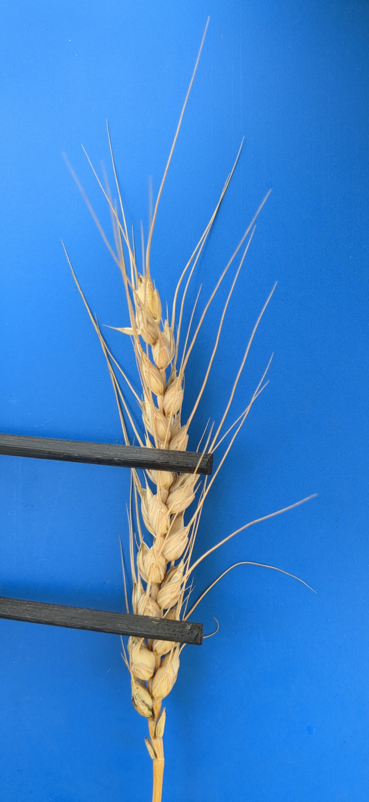
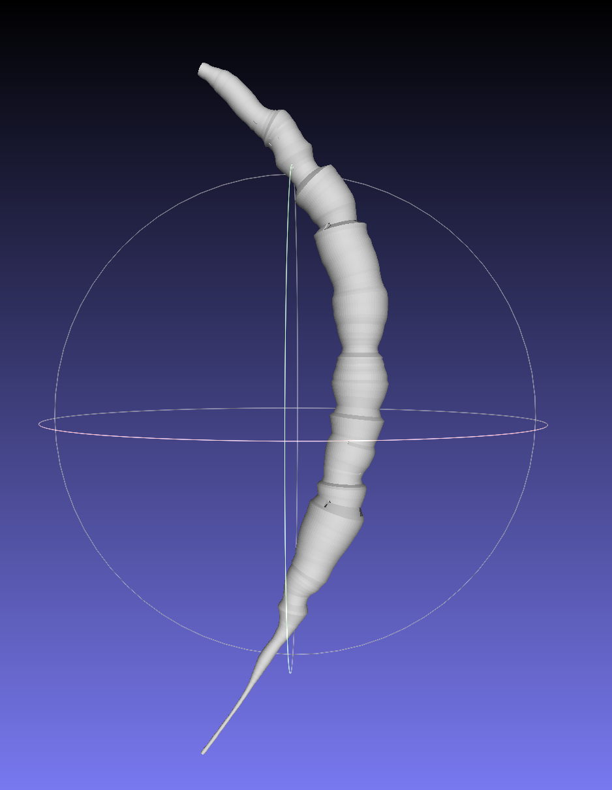
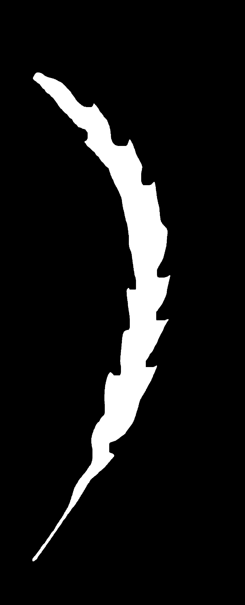
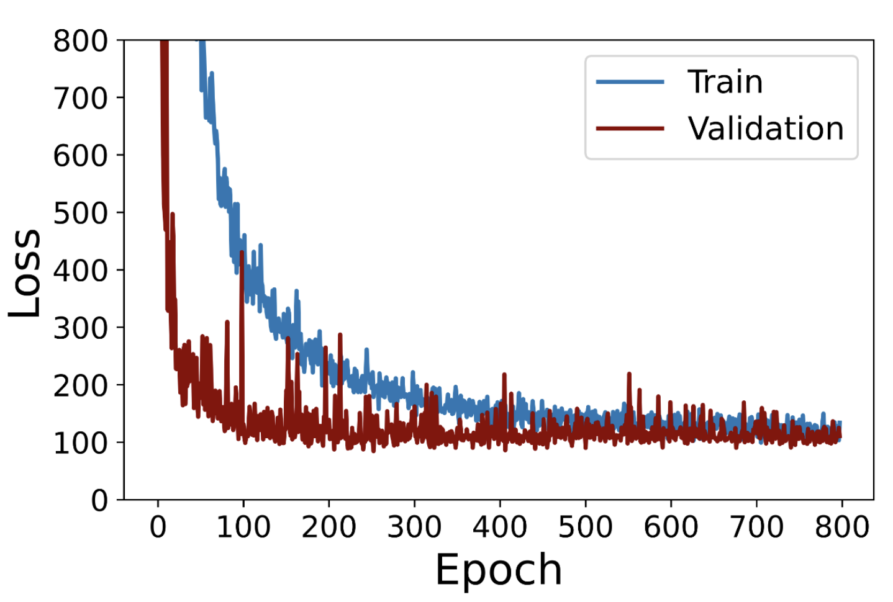

Fine-Tuned Vision Transformers Capture Complex Wheat Spike Morphology for Volume Estimation from RGB Images

Abstract
Estimating three-dimensional morphological traits such as volume from two- dimensional RGB images presents inherent challenges due to the loss of depth information, projection distortions, and occlusions under field conditions. In this work, we explore multiple approaches for non-destructive volume esti- mation of wheat spikes using RGB images and structured-light 3D scans as ground truth references. Wheat spike volume is promising for phenotyping as it shows a high correlation with spike dry weight, a key component of fruiting efficiency. We define the total spike volume per unit area of a wheat canopy at flowering as fruiting capacity. Accounting for the complex geome- try of the spikes, we compare different neural network approaches for volume estimation from 2D images and benchmark them against two conventional baselines: a 2D area-based projection and a geometric reconstruction using axis-aligned cross-sections. Fine-tuned Vision Transformers (DINOv2 and DINOv3) with MLPs achieve the lowest MAPE of 5.08% and 4.67%, and the highest correlation of 0.96 and 0.97 on six-view indoor images, outperform- ing fine-tuned CNNs (ResNet18 and ResNet50), a wheat-specific backbone, and both baselines. When using frozen DINO backbones, deep-supervised LSTMs outperform MLPs, whereas after fine-tuning, improved high-level representations allow simple MLPs to outperform LSTMs. We demonstrate that object shape significantly impacts volume estimation accuracy, with irregular geometries such as wheat spikes posing greater challenges for geo- metric methods than for deep learning approaches. Fine-tuning DINOv3 on field-based single side-view images yields a MAPE of 8.39% and a correlation of 0.90, providing a novel pipeline and a fast, accurate, and non-destructive approach for wheat spike volume phenotyping.
Overview

Highlights
Ground truth data



Methods
Baselines


Neural Networks
